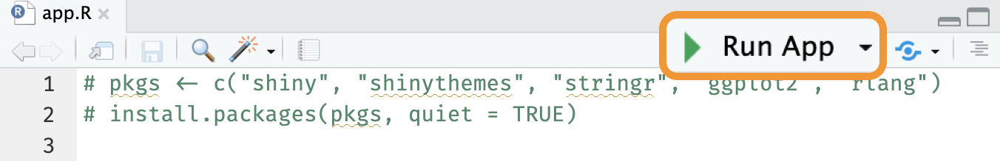
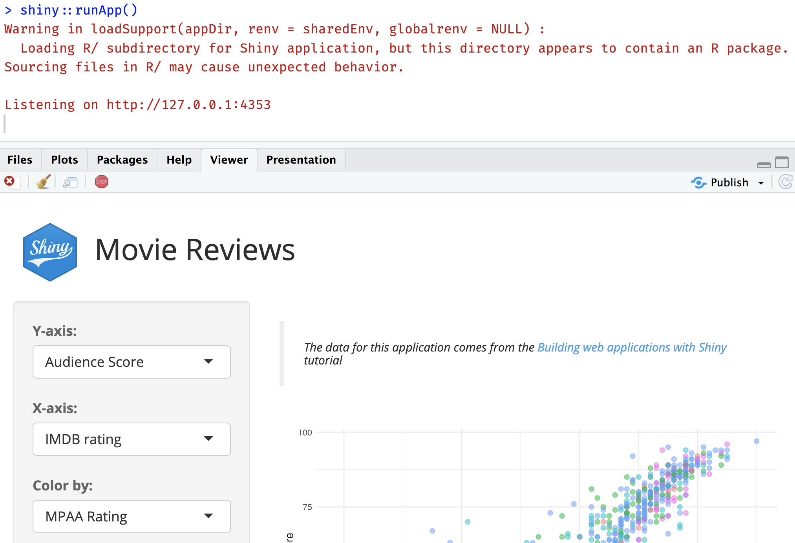
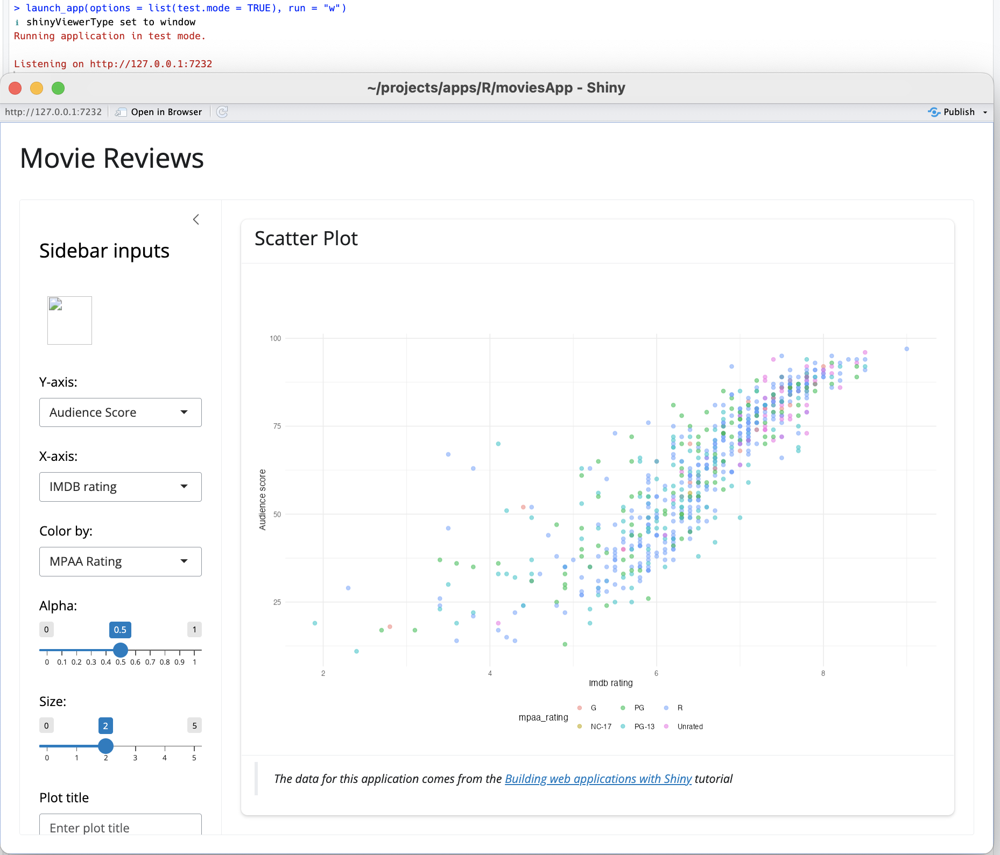
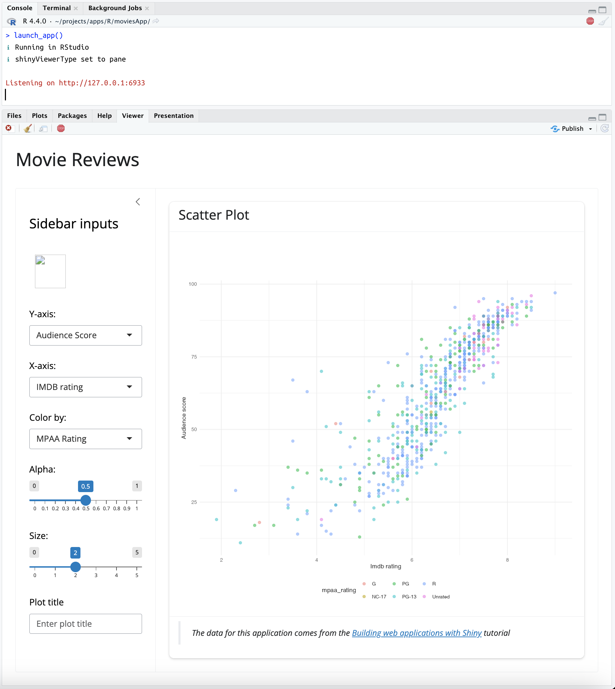
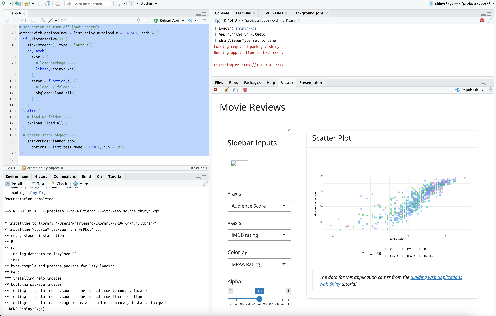
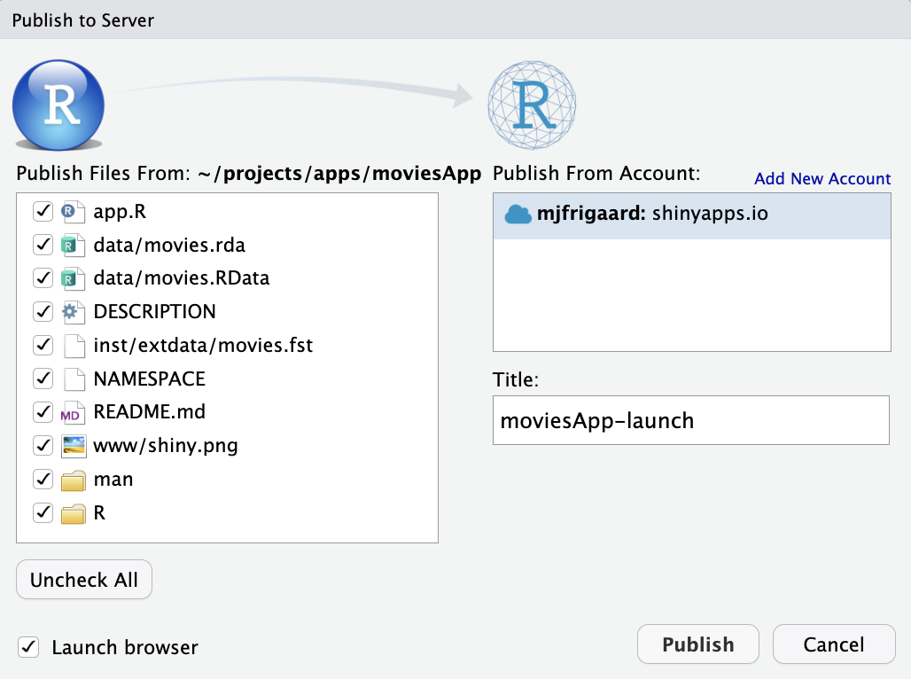

# install.packages('pak')
pak::pak('mjfrigaard/shinypak')8 Launch
During development, we either launch apps using the Run App button at the top of the app.R file, or by calling the standalone app function in the Console. This chapter covers some additional functions you might want to include in the app.R file, the differences between shiny’s shinyApp(), runApp(), and shinyAppDir() functions, and other options for launching an app (or apps) in your app-package.
TLDR: Launching your app
Launching Apps:
shinyApp(): can be bundled in a standalone app function to store an app-packageAlso useful for quick prototyping or if an app is in a single
.RscriptReturns a shiny app object (helpful with testing)
runApp(): versatile function that can launch apps in multiple formats/locationsA directory with a
server.Randui.R, or a singleapp.Rfile`An app object created by
shinyApp()
shinyAppDir(): useful if you need launch a Shiny app programmatically from a directory.
Accessing the code examples
I’ve created the shinypak R package In an effort to make each section accessible and easy to follow:
Install shinypak using pak (or remotes):
Review the chapters in each section:
library(shinypak)
list_apps(regex = '^08')
## # A tibble: 1 × 2
## branch last_updated
## <chr> <dttm>
## 1 08_launch-app 2024-01-17 13:46:38Launch an app:
launch(app = "08_launch-app")In the current branch of moviesApp, the app.R file loads our package and runs the standalone app function:

This section’s code is in the 06.2_pkg-imports branch of moviesApp.
show/hide app.R
# pkgs <- c("shiny", "shinythemes", "stringr", "ggplot2", "rlang")
# install.packages(pkgs, quiet = TRUE)
# packages ------------------------------------
library(moviesApp)
# movies_app ------------------------------------
movies_app()- 1
-
Install packages (if needed)
- 2
-
Load package
- 3
- Call standalone app function
movies_app() is a wrapper function for shinyApp(), where it passes movies_ui() and movies_server() to the ui and server arguments.
8.1 ‘Running’ apps
As we can see in the image below, the Run App icon is available in the Source pane:

app.R in main branch
app.R of main branch
Terminology
I’ll be using the term ‘launch’ to differentiate successfully running an application locally (either in the IDE window, viewer pane, or browser) from clicking on the Run App icon or calling runApp() and deploying an application to shinyapps.io.
If we load the code in R/ with load_all(), then click on Run App, we see this calls runApp() in the Console, but this also produces a warning:

runApp() in main
loadSupport() warning)
Let’s jump further back to the 05_roxygen2 branch of moviesApp. This is the first version of the app-package with movies_app() in the R/ folder (see below).
This section’s code is in the 05_roxygen2 branch of moviesApp.
R/
├── mod_scatter_display.R
├── mod_var_input.R
├── movies_app.R
├── movies_server.R
├── movies_ui.R
└── utils.R
1 directory, 6 files- 1
-
movies_app()standalone function inR/folder
By placing the call to shinyApp() into the R/ folder, we no longer have the Run App icon in the app.R file:
In the 05_roxygen2 branch, the movies_app() function hasn’t been exported, so we should expect the following error when we run the contents of app.R:
Error in movies_app() : could not find function "movies_app"However, calling runApp() from the Console still launches the app.

runApp() with 05_roxygen2 branch
runApp() in the Console of 05_roxygen2 branch
8.2 loadSupport() warning
This behavior might be surprising to you–runApp() can launch the application in moviesApp, even without the standalone app function exported from the package namespace (but it still produces the loadSupport() warning).
loadSupport() warning
When you run this:
shiny::runApp()…and see this:
Warning in loadSupport(appDir, renv = sharedEnv, globalrenv = NULL):
Loading R/ subdirectory for Shiny application, but this directory
appears to contain an R package.
Sourcing files in R/ may cause unexpected behavior.The warning in the Console is telling us loadSupport() has detected that moviesApp is a package, but it’s still sourcing the R/ subdirectory.1
The examples above demonstrate the differences between calling shinyApp() and runApp(), and the tensions between having a standalone app function in an R package vs. having an app.R file in a Shiny project.
In the following sections, we’ll compare shinyApp(), shinyAppDir(), and runApp() to determine which one to use in R/movies_app.R and the app.R file.
8.3 Shiny launch functions
shinyApp(), shinyAppDir(), or runApp()
During development, the IDE provides the Run App icon for launching the application.

runApp())As we’ve seen, Run App calls runApp(), even when we have a call to shinyApp() in the app.R file. This might make you wonder,
“Why even include a call to shinyApp() if the app is being launched with runApp()?”
Let’s review what happens when we call shinyApp(), shinyAppDir(), and runApp():
8.3.1 shinyApp()
shinyApp(): Creates and launches an app defined inline within the call itself (or with UI and server functions passed as arguments).
shinyApp(
ui = fluidPage(
# UI elements
),
server = function(input, output) {
# Server logic
}
)One of the key features of shinyApp() is the creation of the shiny.appobj (a shiny app object):
app <- shinyApp(ui = movies_ui,
server = movies_server)
str(app)If we look at the structure of the returned object from shinyApp(), we see the shiny.appobj includes the appDir under appOptions:
List of 5
$ httpHandler :function (req)
$ serverFuncSource:function ()
$ onStart : NULL
$ options : list()
$ appOptions :List of 2
..$ appDir : chr "/path/to/moviesApp"
..$ bookmarkStore: NULL
- attr(*, "class")= chr "shiny.appobj"- 1
-
appDiris the first argument ofrunApp()
- 2
- A shiny app object
This is why runApp() works with any .R file creating a shiny app object.
8.3.2 shinyAppDir()
shinyAppDir(): Launches an app from a directory (with an app.R or ui.R/server.R files).
shinyAppDir(
appDir = "path/to/app/",
options = list())shinyAppDir() is similar to shinyApp(), but is designed to use a “path to directory that contains a Shiny app.”
In practice, we can use shinyAppDir() with a returned object from shinyApp():
app <- shinyApp(
ui = movies_ui,
server = movies_server
)
app$appOptions$appDir[1] "path/to/moviesApp"This path can be passed to the appDir argument (along with any shiny options).
shinyAppDir(
appDir = app$appOptions$appDir,
options(test.mode = TRUE)
)8.3.3 runApp()
runApp(): A generalized way to launch your app–it can run apps defined inline, or from a directory.
runApp(
appDir = "path/to/app/",
test.mode = TRUE/FALSE)The reason we’re able to call runApp() in the Console to launch both applications above is because it’s versatile:
runApp()
Can launch an app from a directory (i.e., from ui.R/server.R, or a app.R):
In moviesApp
# In console
runApp()Works with a path to an .R file that creates a shiny.appobj:2
runApp(appDir = "path/to/moviesApp")Can also use a shiny.appobj directly:
app <- shinyApp(
ui = movies_ui,
server = movies_server)
runApp(appDir = app)This final method does not produce the loadSupport() warning because a Shiny object (shiny.appobj) has already been created, and runApp() is essentially calling print(app) in the Console.
Recap
shinyApp() is typically used to create apps within an interactive R session, while shinyAppDir() runs a Shiny app stored in a directory (containing an app.R file (or ui.R and server.R files). runApp() also launches apps in a directory, but it’s versatility makes it suitable for running apps in various formats, either defined inline or in separate directories.3
8.4 Standalone options
Below I’ll cover some options to consider when writing a standalone app function.
8.4.1 if (interactive())
The first thing we’ll include is a check to see if there is a “human operator to interact with” with base::interactive():
if (interactive()) {
} else {
}You have probably seen control flow like this in shiny help file examples (like flowLayout() below):

if (interactive()) in flowLayout() example
if (interactive()) allows us to distinguish between launching the app from a Posit Workbench session (i.e., during development) and deploying the application (i.e., publishing the application on Posit Connect).
8.4.2 options argument
An options argument can be passed to shinyApp() or shinyAppDir(). For example, one of the Shiny options we could include in our standalone app function is test.mode:
‘Should the application be launched in test mode? This is only used for recording or running automated tests. Defaults to the
shiny.testmodeoption, orFALSEif the option is not set.’
test.mode lets us export values from our application when we’re running tests (which we’ll cover in-depth in the Tests section).
We’ll make options an argument (defaulting to an empty list()) in our updated movies_app() function.
movies_app <- function(options = list()) {
shinyApp(
ui = movies_ui(),
server = movies_server,
options = options
)
}- 1
-
Build the shiny app object with
movies_uiandmovies_server
- 2
-
Include
optionslist
8.4.3 shinyViewerType
I’ve written display_type() helper function to control where the Shiny app is launched. The run argument in display_type() takes the following options:
"p"= Viewer Pane
"w"= IDE Window
"b"= External browser
The option to access configuration is shiny.launch.browser:4
display_type <- function(run = "w") {
if (run == "p") {
options(shiny.launch.browser = .rs.invokeShinyPaneViewer)
} else if (run == "b") {
options(shiny.launch.browser = .rs.invokeShinyWindowExternal)
} else if (run == "w") {
options(shiny.launch.browser = .rs.invokeShinyWindowViewer)
} else {
options(shiny.launch.browser = NULL)
}
shinyViewerType <- getOption('shiny.launch.browser') |>
attributes() |>
unlist() |>
unname()
cli::cli_alert_info("shinyViewerType set to {shinyViewerType}")
}- Set option
- Get option
- Print option to console
The roxygen2 documentation for display_type() is below:
show/hide roxygen2 for R/display_type.R
#' Shiny app display mode helper
#'
#' @param run where to launch app:
#' * `"p"` = launch in viewer pane
#' * `"b"` = launch in external browser
#' * `"w"` = launch in window (default)
#'
#' @return notification of `shinyViewerType` option
#'
#' @export
#'
New dependency!
The cli package is imported as part the devtools/usethis workflow, otherwise we’d want to add it the Imports field of the DESCRIPTION with usethis::use_package('cli').
8.4.4 Updated movies_app()
In movies_app(), I’ll add the interactive() check, display_type(), and test.mode option:
movies_app <- function(options = list(), run = "w") {
if (interactive()) {
display_type(run = run)
}
shinyApp(
ui = movies_ui(),
server = movies_server,
options = options
)
}- 1
-
Check if interactive (Workbench) launch
- 2
-
Set
shinyViewerTypeoption withdisplay_type()
- 3
- Launch app
After loading, documenting, and installing the package, I can test my new standalone app function:
Ctrl/Cmd + Shift + L / D / B

movies_app() function
movies_app() function launches the application in the window (without the loadSupport() warning)
Now we can see movies_app() is launching the application without the loadSupport() warning. We can also adjust the test and run arguments to see make sure these are implemented correctly:

test and run arguments in movies_app()
movies_app() in Viewer pane and test.mode
8.5 app.R options
Your app.R file should contain any options or settings that you’ll use during development. There are multiple ways to launch an application from app.R, and I encourage you to explore the options below to find a method that works for your workflow/environment.
8.5.1 !interactive() == TRUE
Non-interactive behaviors
What if the session isn’t interactive?
In this case, we’ll divert all regular output to the standard error stream.
8.5.2 stderr()
The sink() function “diverts R output to a connection”, so the code below sends the output that would normally print to the console to the where error messages are written.
if (!interactive()) {
sink(stderr(), type = "output")
} else {
}This is useful in a non-interactive settings if we want to re-direct the error output for the console text-mode connection.
8.5.3 tryCatch()
tryCatch() is used for ‘catching conditions’ during the execution of an expression (expr =):
if (!interactive()) {
sink(stderr(), type = "output")
tryCatch(expr = {
library(moviesApp)
}, error = function(e) {
pkgload::load_all()
})
} else {
}In this case, if library(moviesApp) throws an error, the function specified after error = is executed (i.e., pkgload::load_all()).5
Written this way, in a non-interactive R session, app.R will re-direct the error output and attempt to load and attach moviesApp, and if this fails, app.R will attempt to load all the files in the R/ folder.
pkgload
New dependency!
The pkgload package is imported as part the devtools/usethis workflow, otherwise we’d want to add it the Imports field of the DESCRIPTION with usethis::use_package('pkgload').
If the session is interactive (i.e., !interactive() == FALSE), we want app.R to load all the code in the R/ folder with pkgload::load_all().6
if (!interactive()) {
sink(stderr(), type = "output")
tryCatch(expr = {
library(moviesApp)
}, error = function(e) {
pkgload::load_all()
})
} else {
pkgload::load_all()
}8.5.4 withr
New dependency!
The withr package is imported as part the devtools/usethis workflow, otherwise we’d want to add it the Imports field of the DESCRIPTION with usethis::use_package('withr').
The withr package is designed to ‘run code with safely and temporarily modified global state’, and it comes in handy when launching shiny apps. For example, I want to turn off the loadSupport() behavior when launching the app from app.R.7
I can use withr::with_options() to accomplish this using the following new and code arguments
new: a named list of the new options and their values
code: the ’Code to execute in the temporary environment
I want to place the withr::with_options() at the top of app.R and pass contents of app.R into the code argument. Just to be sure no options for shiny.autoload.r previously exist, I’ll also set this option to NULL before executing the rest of the code.
withr::with_options(new = list(shiny.autoload.r = FALSE), code = {
if (!interactive()) {
sink(stderr(), type = "output")
tryCatch(
expr = {
library(moviesApp)
},
error = function(e) {
pkgload::load_all()
}
)
} else {
pkgload::load_all()
}
moviesApp::movies_app(
options = list(test.mode = TRUE), run = 'p')
})- 1
-
Turn off
loadSupport()
- 2
-
Define non-interactive behaviors
- 3
-
Define interactive behaviors
- 4
- Launch app (with options)
Now that we’ve updated the app.R account for the app-package structure, we should load, document, and install moviesApp and run it’s contents:
Ctrl/Cmd + Shift + L / D / B
8.5.5 Updated app.R
When we send the contents of app.R to the Console, the loadSupport() options are applied before running the app:
Launch app with the shinypak package:
launch('08_launch-app')

app.R to Console
loadSupport() warning
R/_disable_autoload.R
In the documentation for loadSupport(), you’ll find a second option for removing the R/ directory sourcing behavior: placing a _disable_autoload.R file in the R/ directory (this is also one of the behaviors of the golem framework, which we will cover in the following chapters).
Both methods work–this chapter demonstrates a way to remove the loadSupport() warning without having to add this file.
8.6 Deploying the app
To deploy the app, I can click on the Publish icon:

Make sure all the files in the package are selected, then click Publish

shinyapps.io
shinyapps.io
The Deploy pane will open and you’ll see a deployment log as your application is sent to the server:
show/hide deployment log
── Preparing for deployment ────────────────────────────────────────────────────
ℹ Creating application on server...
✔ Created application with id 10026672
ℹ Bundling 24 files: .Rbuildignore, app.R, DESCRIPTION, launch.R, movies.RData, NAMESPACE, README.md, www/shiny.png, man/display_type.Rd, man/mod_scatter_display_server.Rd, man/mod_scatter_display_ui.Rd, man/mod_var_input_server.Rd, man/mod_var_input_ui.Rd, man/movies_app.Rd, man/movies_server.Rd, man/movies_ui.Rd, man/scatter_plot.Rd, R/display_mode.R, …, R/movies_ui.R, and R/scatter_plot.R
ℹ Capturing R dependencies with renv
✔ Found 63 dependencies
✔ Created 258,028b bundle
ℹ Uploading bundle...
✔ Uploaded bundle with id 7740376
── Deploying to server ─────────────────────────────────────────────────────────
Waiting for task: 1340526445
building: Parsing manifest
building: Building image: 9212796
building: Fetching packages
building: Installing packages
building: Installing files
building: Pushing image: 9212796
deploying: Starting instances
rollforward: Activating new instances
unstaging: Stopping old instances
── Deployment complete ─────────────────────────────────────────────────────────
✔ Successfully deployed to <https://yourusername.shinyapps.io/app-name/>
Deployment completed: https://yourusername.shinyapps.io/app-name//8.6.1 Deploy log
On shinyapps.io, the deployment log shows the loadSupport() warning persists (but the application still deploys). The server-side warning is a known issue.8
Container event from container-8858897: start
Running on host: ec51aa0bf0bc
Running as user: uid=10001(shiny) gid=10001(shiny) groups=10001(shiny)
Connect version: 2023.09.0
LANG: C.UTF-8
Working directory: /srv/connect/apps/moviesApp
Using R 4.3.1
R.home(): /opt/R/4.3.1/lib/R
Content will use current R environment
R_LIBS: (unset)
.libPaths(): /opt/R/4.3.1/lib/R/library
shiny version: 1.7.5.1
httpuv version: 1.6.12
rmarkdown version: (none)
knitr version: (none)
jsonlite version: 1.8.7
RJSONIO version: (none)
htmltools version: 0.5.7.9000
reticulate version: (none)
Using pandoc: /opt/connect/ext/pandoc/2.16
Starting R with process ID: '36'
Shiny application starting ...
Warning in loadSupport(appDir, renv = sharedEnv, globalrenv = NULL) :
Loading R/ subdirectory for Shiny application, but this directory appears to contain an R package.
Sourcing files in R/ may cause unexpected behavior.
ℹ Loading moviesApp
Running application in test mode.
Listening on http://127.0.0.1:45567
Container event from container-8858897: stopRecap
This chapter has covered some options for launching your app within your app-package. We went over what to include in the standalone app function and the app.R file, the differences between shinyApp(), shinyAppDir() and runApp(), but it’s worth exploring these topics further (especially if you plan on having more than one apps in your package).
Recap: launching your app
shinyApp():
shinyApp()doesn’t care about file structure, so it’s useful for quick prototyping or if the app is in a single.Rscript. It’s also more portable because you can share your app with a single.Rscript.It’s possible to bundle
shinyApp()in a wrapper function to integrate within an R package (like we’ve done withmovies_app()).shinyApp()returns a shiny app object, which can be useful if you want to explore the app structure programmatically (i.e., testing).
shinyAppDir():
shinyAppDir()launches an app from a directory, and is useful if an app is spread across multiple files and folders.
runApp()
runApp()a more generalized way to launch an app. It works with:apps contained in a directory (i.e.,
runApp('path/to/app')apps in separate
ui.Randserver.Rfiles (or a singleapp.Rfile)a shiny app object (passed to the
appDirargument).
Clicking on Run App will run the application with
runApp()if is detects a file (or files) that creates a shiny object.
In the following chapter, we’re going to cover how to ensure movies.Data becomes part of the moviesApp namespace.
If you recall, we covered the
loadSupport()function in Chapter 2.↩︎Shiny’s examples are run using
runApp()↩︎It’s worthwhile to read the documentation on
shinyApp(),shinyAppDir(), andrunApp().↩︎The
shiny.launch.browseroptions are covered in this blog post by Garrick Aden-Buie, and I’ve combined them into arunargument inmovies_app()↩︎pkgloadis part of the conscious uncoupling of thedevtoolspackage we learned about back in Chapter 6.↩︎pkgload::load_all()is the function that’s actually called when we rundevtools::load_all()(or use Ctrl/Cmd + Shift + L), and this is somewhat analogous to runninglibrary(moviesApp)↩︎You can read more about the
shiny.autoload.roption andloadSupport()in this article↩︎You can learn more about this warning by reading these posts on StackOverflow (How can I deploy my shiny app as a package? Problem with directory when deploying app on shinyapps), and this post on Posit Community (Errors when deploying app on shinyapps.io).↩︎